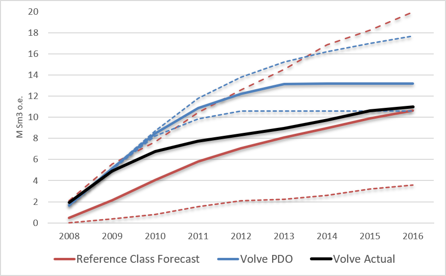

Summary
The study asks one question at four points of a field's life: how did estimates like this one turn out before? It uses public Norwegian shelf data to compare estimates with outcomes for exploration wells and for field developments, and then forecasts Volve's production from the record of other fields instead of from a reservoir model.
The idea is sound and the main message survives a recalculation: volumes are over-estimated before drilling, and the 2005 Volve plan gave a far narrower range than the record of other fields supports. Several of the individual numbers do not survive, because of how wells, prospects, years and volumes were counted.
| Part of the study | Expert's result | Reproduced | After recalculation |
|---|---|---|---|
| 1. Probability of discovery | Low probabilities are far too low: 30 % discoveries where 7 % was stated | Yes | Not confirmed. Per prospect the stated probabilities are borne out: 242 discoveries expected, 244 made |
| 2. Recoverable volume, discovery wells | Results far below prognoses (figure only) | Yes | Confirmed in direction. Median result is 0.25 of the prognosis |
| 3. Volume in place, discovery wells | Results sum to 0.15 of prognoses; correlation 0.06 | Yes | Confirmed in direction, about half as severe: 0.32 of totals, median 0.33 |
| 4. Reserves at sanction against discovery volume in place | Median ratio 0.32; Volve an outlier at 3.3 | Yes | The volume used is the pre-drill prognosis, not the discovery. Volve is an outlier because the well was drilled for gas prospects |
| 5. Reference class forecast of production | Median field has produced 0.52 of its reserves after five years; Volve close to the median after nine | Yes | Median 0.56 after five years when counted from first production; ranges hold up in a back-test |
| 6. Planned against actual capital cost | Slide without content | — | Not done |
Reference class forecasting, in brief
A forecast made from the details of a project — maps, a reservoir model, a drilling schedule — is an inside view. Research on judgement, summarised in the reference paper, finds inside views of projects too optimistic and too sure of themselves. Reference class forecasting takes the outside view: it sets the details aside and asks how a class of comparable past cases turned out relative to what was forecast for them. The spread of those outcomes is the forecast range for the new case.
The reference paper for this work is Nesvold and Bratvold (2022), converted to Markdown in LIB_2022_ENERGY_debiasing_production-forecasts_ENesvold+RBratvold.md. Its content, in the terms used below:
| Element | In the paper |
|---|---|
| Data | 71 oil fields on the Norwegian shelf with first production 1995–2020. For each, the operator's forecast of cumulative oil at the investment decision — a low case, a mean and a high case per year — and the production that followed. The forecasts are confidential |
| Alignment | Forecast and production are lined up at production start, so a late start does not count as a shortfall. The first calendar year is left out because fields start in different months |
| Optimism | Production over mean forecast. About 0.8 during the first five years; almost 70 % of fields below the mean after four years |
| Overprecision | Share of outcomes inside the low–high range, which should hold 80 %. Under 30 % after two years, about 50 % later; at least 25 % of fields below the low case throughout the first ten years |
| Reference forecast | A production profile made only from 19 abandoned fields, scaled to the new field's expected recovery, with low and high set at 0.4 and 1.6 times it |
| Calibration | Multipliers per production year that move the operator's forecast to where the record says it should be: the mean times 0.78–0.82 in years 2–5, a low case of about 0.3 times the mean, a high case of 1.1–1.4 times the mean (Table B.3) |
| Validation | Ten-fold cross-validation; shares below, inside and above the range; a probability plot with a test of uniformity; a skill score from a proper scoring rule (CRPS); splits by period and by field size |
| Findings | The reference forecast, which uses no knowledge of the field, beats the operators' forecasts. Calibrated forecasts are only slightly better than the reference. The low and high cases add nothing to the mean. Bias has not lessened over time and does not depend on field size |
What the study is for, and how the expert reasons
The material is a notebook with four calculations, a workbook, six figures and a presentation of seven slides. It has no written text, so the purpose is read from the slide titles, the comments in the notebook and the order of the work.
The study follows a volume estimate through the decisions of a field's life and checks it against the record at each one:
| Decision | Estimate made | Outcome it is checked against | Slide |
|---|---|---|---|
| Drill an exploration well | Technical probability of discovery | Whether the well was a discovery | 1 Calibration of technical exploration probability |
| Drill an exploration well | Volume expected if there is a discovery | Volume reported after drilling | 2 Volume calibration |
| Sanction a development | Reserves in the plan for development | The volume the exploration data gives for the discovery well | (figure only) |
| Sanction a development | Reserves in the plan, and when they will be produced | Production year by year | 3 Reference class forecasting; 4–6 Volve |
| Sanction a development | Capital cost | Actual cost | 7 (empty) |
The reasoning has the same six steps each time:
- Choose a quantity that is forecast when a decision is made and observed later.
- Find a public record that holds both, for many cases. Where the forecast itself is not public, take a stand-in: the reserves in the resource account of the approval year for the PDO estimate; recoverable volume over a fixed recovery factor for volume in place.
- Divide outcome by forecast, so that large and small cases can be pooled.
- Describe the pooled ratios: where their middle lies (bias) and how wide they spread (uncertainty). On logarithmic axes against lines of factor 2 and 10, or as the 10 %, 50 % and 90 % points of the fields year by year.
- Turn the description into a forecast for a new case by multiplying with that case's own estimate. For Volve: the fractions of the class times an expected recovery of 13.7 million Sm3 o.e.
- Set this beside the operator's forecast and beside what happened.
Two things distinguish this from the paper. The paper calibrates forecasts: it needs the operators' forecast profiles, which are confidential. The expert builds the class from outcomes only — production relative to sanctioned reserves — which needs no forecast profile and can be done with open data. And where the paper fixes the range at 0.4 and 1.6 times the reference, the expert reads the range off the fields themselves. Both are good moves. What the study does not take over from the paper is its testing: no result is checked on cases held back, and no range carries an uncertainty.
The five analyses, one by one
1. Is the stated probability of discovery borne out?
Data. 2026-11 PrognosisResultData_Released.xlsx: 1 995 rows for 629 exploration wells spudded 1989–2024. Each prospect a well was to test has one or more prognosis rows (probability of discovery; volumes in place and recoverable with low, central and high values; rock volume, column height, porosity and the other factors of the volume equation) and one result row (discovery yes or no; the same quantities after drilling).
Method. All rows of a well are merged: the probability is the mean over its prognosis rows, the outcome is a discovery if any result row says so. Wells are grouped by probability in steps of 0.1, and the share of discoveries in each group is plotted against the mean probability, with Wilson intervals. This is a reliability diagram: of the wells given about 20 %, were about 20 % discoveries?
Result. 575 wells. Discoveries are more frequent than stated in every class below 0.7; where under 10 % was stated, 30 % were discoveries.

2 and 3. Is the prognosed volume found?
Method. For wells with a discovery, the four recoverable volumes (oil, gas, and the liquid and gas associated with each) are added over all prognosis rows, and over all result rows, of the well. Result is plotted against prognosis on logarithmic axes. For volume in place, the same recoverable volumes are divided by fixed recovery factors, 0.35 for oil and 0.60 for gas.
Result. 130 wells have both sums above zero. Nearly all lie below the line of equality, many by a factor of ten. The results add up to 1 755 against 11 342 million Sm3 o.e. prognosed, a ratio of 0.15. The correlation is 0.06.

4. How do sanctioned reserves relate to the volume at discovery?
Data. A link file made outside the notebook: 37 fields, their discovery well, a “discovery in-place” volume from the prognosis data, and the oil and gas reserves in the resource account (RCB_reserves.xlsx) for the year of approval.
Result. 36 fields. Reserves at sanction are typically a third of the discovery volume (median 0.32), with a scatter of more than a factor of ten either way. Volve stands out with reserves 3.3 times the discovery volume.

5. A production forecast from the record of other fields
Data. Sodir's yearly production per field, the dates of PDO approvals, and the resource-account reserves.
Method. For each field: the reserves of the account year nearest its first approval; the first calendar year with production as year 1; cumulative production through years 1 to 10 divided by those reserves. Across the fields with ten years of history, the 10 %, 50 % and 90 % points of that fraction are taken year by year. Multiplied by an expected recovery they are a forecast with a range — for Volve, by 13.7 million Sm3 o.e.
Result. 102 fields. The median field has produced 0.29 of its sanctioned reserves after three years, 0.52 after five and 0.83 after ten; one field in ten has passed 1.62 after ten years, one in ten has not reached 0.27.
For Volve the slides show three things. The range from the record is very wide: 3.6 to 20 million Sm3 o.e. after nine years. The PDO's range is a fraction of it and starts from nothing: the three PDO cases nearly coincide for the first two years. And Volve's actual production ran close to the PDO for two years, fell below the PDO's low case from the third year, and ended near the median of the record.

What the recalculation shows
Probability of discovery: the unit of count decides the result
186 of the 609 wells with a stated probability test more than one prospect, and some prospects have alternative prognoses (an oil case and a gas case). Averaging the probabilities of a well and counting any discovery compares two different things: the chance that one given prospect holds hydrocarbons, and the event that at least one of several does. A well with three prospects at 10 % each has an average of 10 % and a chance of about 27 % of at least one discovery. Discoveries in zones that had no prognosis are counted as well.
Counted per prospect — 869 prospects with a stated probability and a result — the mean stated probability is 27.8 % and 28.1 % were discoveries. In the lowest class 6 % was stated and 6 % found. The expert's conclusion that low probabilities are much too low is a product of the averaging.
Smaller points on the same analysis: the intervals are computed with z = 1.645, which is a 90 % interval, and labelled 95 %. Rows whose evaluation year is written as a range (“1997/1998”) are dropped by the year filter, prognosis and result independently of each other. And the figure in the presentation does not match the notebook's saved output.
Volumes: right direction, wrong size
- The data has volumes in place for both prognosis and result. The study instead divides recoverable volumes by fixed recovery factors. That only rescales the recoverable comparison; it is not a comparison of volumes in place, and recoverable results are missing for many discoveries.
- Alternative prognoses of one prospect are added together, although only one of them can come true.
- The prognoses of a well's dry prospects are included in the well's sum, while the result holds only what was found.
- The headline figures are a ratio of sums, which a handful of large prospects decide, and a correlation of untransformed volumes (0.06), which says little about data that span four orders of magnitude; on logarithms it is 0.30 for the same wells.
Prospect by prospect, using the in-place columns and weighting alternative cases by their probabilities, 226 discoveries have a prognosed and a resulting volume in place. The median result is 0.33 of the prognosis (90 % interval 0.27–0.42), 82 % of results are below the prognosis, and the ratio of totals is 0.32 — against 0.15 in the study. The over-estimation is real and large; it is about half as severe as the study's number says.
The discovery volume in the link file is a pre-drill prognosis
For 36 of the 37 fields, the “discovery in-place” volume equals the plain sum of the in-place volumes over every prognosis row of the discovery well — pre-drill, including dry prospects and both alternatives where there are two. The notebook describes the figure as relating post-drill in-place estimates to sanctioned resources; it relates pre-drill prognoses to them.
This explains Volve's position. Well 15/9-19 SR was drilled in 1993 for two gas prospects with 4.04 billion Sm3 of gas in place between them. The first was dry. The second held oil, not gas: the result row gives 2.93 million Sm3 o.e. in place. The reserves of 13.2 million Sm3 o.e. sanctioned twelve years later belong to an oil accumulation the prognosis did not describe. Volve is not an outlier of estimation; the comparison does not apply to it.
The production class: who is in it, and how its years are counted
| Point | What the study does | Why it matters |
|---|---|---|
| Reserves “at FID” | Nearest account year, however far. For 26 fields it is two or more years after approval; the account starts in 1990, so fields approved in the 1970s and 1980s get a figure from 1990–1993 (Gyda, approved 1987: from 2010) | For those fields the denominator already contains ten to twenty years of production experience. It is not an estimate made at the decision |
| First year | First calendar year with any production | A field that starts in November has almost nothing in year 1. The median fraction after one year is 0.04; counted in 12-month periods from first production it is 0.09. For 5 fields the first year lies before the approval; Balder (1991) and Grane (1996) have small volumes recorded years before they started up |
| Volve | Is itself one of the fields | The case being forecast should not be in its own reference class. The effect on the percentiles is small with 102 fields |
| Hindsight | 41 of the fields started producing after 2005 | Fine for a method to use from now on. As a test of what could have been forecast for Volve in 2005 it uses knowledge from the future |
| Units | Production in all oil equivalents (with NGL and condensate) over reserves of oil and gas only; Volve scaled with 13.7, which includes NGL and condensate | Numerator and denominator differ. Volve's oil and gas reserves in the same account are 13.18 |
| Last year | 2026 is in the data with eight months | Fields that started in 2017 get an incomplete tenth year |
| Kind of field | Oil and gas fields of all sizes together; 34 of 91 fields approved since 1990 are mainly gas | Size matters: larger fields produce their reserves more slowly (rank correlation -0.40 between size and fraction after three years, p = 0.0001). Oil against gas does not (p = 0.53) |
| Uncertainty and testing | None | The 10 % and 90 % points of a hundred fields are themselves uncertain, and whether such ranges would have held for later fields is not examined |
| The PDO curves | Entered in the workbook; source not stated | They follow PDO Table 4.5 year by year but run on past the economic cut-off the table applies, and total 11.88 million Sm3 of oil where the PDO gives 11.40. The total equals the first resource-account entry for Volve |
What each correction does to the fraction of sanctioned reserves produced. Low and high are the 10 % and 90 % points of the fields.
| Calculation | Fields | After 3 years: low / median / high | After 5 years |
|---|---|---|---|
| As in the notebook | 102 | 0.06 / 0.29 / 0.56 | 0.15 / 0.52 / 0.92 |
| Volve left out | 101 | 0.06 / 0.29 / 0.56 | 0.15 / 0.51 / 0.92 |
| … and only estimates made within a year of a PDO from 1990 on | 75 | 0.10 / 0.31 / 0.68 | 0.16 / 0.53 / 0.97 |
| … and production counted as oil and gas, like the reserves | 75 | 0.09 / 0.30 / 0.58 | 0.15 / 0.51 / 0.91 |
| … and the incomplete year 2026 ignored | 71 | 0.10 / 0.30 / 0.58 | 0.16 / 0.51 / 0.91 |
| … and time counted in 12-month periods from first production after approval | 87 | 0.10 / 0.34 / 0.64 | 0.18 / 0.56 / 1.01 |
The corrections to membership and units move the result little. The count of years moves it a great deal in the early years, which are the ones that matter for present value: the study's median field is about half a year behind a field counted from its first month. Volve started in February, so against the study's class it looks ahead of the record by more than it was.
Data and reproducibility
- In
RCB_reserves.xlsxthe rows labelled 2020 and 2021 are exchanged: for 2004–2019 the file agrees with Sodir's reserves table of the same year, for 2020 and 2021 with the other year. No field in the ten-year class is affected. - The link file of analysis 4 and the charts of slides 4–6 were made outside the notebook; the charts exist only as pictures in the presentation. The workbook behind them holds typed-in values without source.
field_in_place_volumes.xlsxandfield_reserves (1).xlsxare in the data folder and not used. The first holds today's in-place volumes per field, which is the natural outcome for analysis 4.- The notebook cells depend on being run in order (the second and third reuse the table filtered by the first), and write figures to two different folders.
- The origin of the prognosis file is not stated. Its name and columns point to Sodir's record of exploration-well prognoses and results; this was not verified.
What holds
- Explorers on the shelf over-estimate what a discovery will hold, by a wide margin, and their stated ranges are far too narrow. This is the strongest result in the data and the study found it.
- Reserves at sanction are a poor guide to what a field will have produced after a given number of years: the 10–90 % range across fields spans a factor of four to five. The study's way of turning this into a forecast range is sound.
- For Volve, the outcome sat inside the range of the record throughout, and below the PDO's low case from the third year. A back-test of the corrected class on 62 later fields puts 74 % of their three-year outcomes inside its 10–90 % range; the paper found about 50 % or less for operators' forecasts.
- The step from the paper's method to one that needs only public data is the study's real contribution, and it is what makes the method usable in this project.
One conclusion should be dropped: that low discovery probabilities are too low. And the closeness of Volve's final production to the class median is one field; it shows that the outcome was unremarkable against the record, not that the median is a good predictor.
Recommendations
| # | Recommendation | Reason |
|---|---|---|
| 1 | Count the case the estimate was made for: the prospect, not the well; one probability and one volume per prospect, with alternative cases combined by their probabilities | Removes the mismatch between estimate and outcome in analyses 1–3 |
| 2 | Use the quantity the data holds. Volumes in place from the in-place columns; today's field volumes from field_in_place_volumes.xlsx | No fixed recovery factors; more cases |
| 3 | Write the reference class down before computing: which fields, which estimate, which outcome, which start. Admit a field only if its estimate dates from the decision | Keeps hindsight out of the denominator and makes the class reviewable |
| 4 | Count time from the first month of production after approval, in 12-month periods | Removes the start-month effect; Sodir publishes production by month |
| 5 | Keep the case out of its own class, and state what was knowable at its decision date | Separates a method for future use from a test on a past case |
| 6 | Same units above and below the line; oil alone for comparison with an oil forecast | The PDO's range is given for oil only |
| 7 | Describe both biases with numbers: the middle of outcome over estimate, and the share of outcomes below, inside and above the stated range | The paper's two measures; the prognosis data states low and high values that the study does not use |
| 8 | Put an interval on every statistic (bootstrap), and report the number of cases with it | Shows which differences are within noise |
| 9 | Test out of sample: rebuild the class as it stood at each field's approval and see where the field then fell. Cross-validate any calibration factor | The only evidence that the ranges mean what they say |
| 10 | Check what the class depends on — size, product, period — and condition on what matters; report the result for each alternative class | Size shifts the production fractions; product does not |
| 11 | Score forecasts with a proper scoring rule against a no-skill reference | The paper's skill score; shows whether detail adds anything |
| 12 | Use the paper's published calibration factors on the PDO forecast as a second outside view | Independent of the class built here; needs only Table B.3 |
| 13 | Look for the cause where the data allows: compare the factors of the volume equation before and after drilling | Tells a subsurface team where its estimates go wrong |
| 14 | One script from the data files to every number and figure; no typed-in values; sources for every series | Lets the next person repeat and extend the study |
| 15 | Complete the cost comparison. Sodir has actual investments per field; the PDO estimates would have to be collected, probably from the yearly budget propositions to the Storting (not checked) | Slide 7; the paper cites cost and time overruns in oil and gas projects as well documented |
Recommendations 1–14 are carried out in the companion study, volve-rcf-study.md; number 11 with simpler scores than the paper's. Recommendation 15 needs data that is not in the repository.
How this review was made
- The paper was converted to Markdown page by page and checked against its text layer; equations and Table 2 were read from the page images.
- The notebook's four calculations were rewritten as functions and their outputs compared with the saved outputs: well counts, class tables, totals, correlation, medians and all thirty percentiles of the production class agree. One well falls on the other side of a class boundary in analysis 1.
- Not verified: the origin of the prognosis file and of
RCB_reserves.xlsx; the PDO curves in the workbook; how the 37 fields of the link file were chosen (39 fields have a discovery well in the prognosis data, 91 fields pass the rules of the production class). - The slides carry no conclusions in words. Where this review says what the study concludes, it is read from the figures.